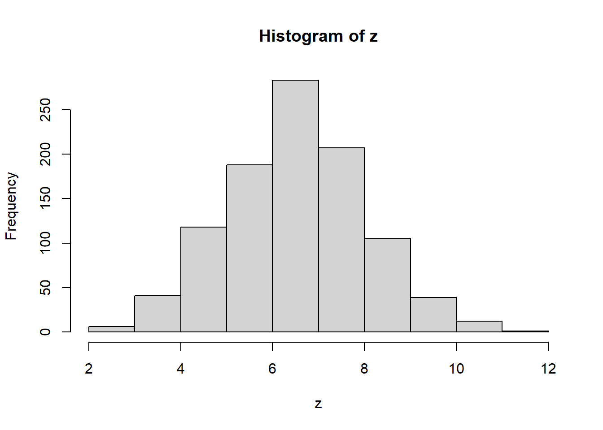

Min. 1st Qu. Median Mean 3rd Qu. Max.
2.285 5.558 6.514 6.524 7.497 11.362 R installatie
markdown
R
Samenvatting
Hoe te beginnen met R.
R is een (gratis) programmeertaal voor statistische berekeningen en data-analyses en beschikbaar voor Windows, MacOS en Unix. Na installatie krijg je een eenvoudige GUI met daarbinnen een console. Via de console kun je R opdrachten intypen en direct laten uitvoeren. Via de Gui kun je een bestand met R opdrachten maken (R-script), opslaan en uitvoeren.
Door de structuur van R is de software uitstekend te gebruiken voor het uitvoeren van (reproduceerbaar) statistisch onderzoek waarmee je ook nog eens de rapporten en presentaties kunt genereren.
R heeft wel een behoorlijke drempel om er mee te beginnen. Veel opdrachten kun je op zoveel manieren uitvoeren dat je snel de weg kwijtraakt. Gelukkig is er een grote, actieve community waar je hulp kunt krijgen. Ook zijn er erg veel boeken, tutorials en blogs waar je veel informatie kunt vinden.
Installatie R
De thuisbasis van het R project is https://www.r-project.org/. Downloaden van R kan op “Comprensive R Archive Network” CRAN. Daarna eenvoudig de installatie uitvoeren.
Opmerking
Een andere optie het gebruik van Microsoft R Application Network MRAN
R biedt na installatie een console waar R commando’s kunnen worden ingegeven en het resultaat op het scherm weergegeven. Dit is een werkbare methode, maar het is veel handiger en ook aan te raden om met een IDE als RStudio te gaan werken.
Eenvoudig voorbeeld
Hieronder een eenvoudig voorbeeld met vier opdrachten. Eerst worden 1000 getallen random getrokken uit een normale verdeling met gemiddelde 6,5 en een standaarddeviatie 1,5. Het resultaat wordt toegekend aan variabele z. In R is dat een vector met in dit geval 1000 getallen. De opdracht summary geeft een 5-getallensamenvatting van de waarden, waarna een (default) histogram en een (default) boxplot wordt getekend.
z <- rnorm(n = 1000, mean = 6.5, sd = 1.5)
summary(z)
hist(z)
boxplot(z)

RStudio
Je kunt met de standaard meegeleverde Gui werken, maar veel plezieriger en handiger is te werken met RStudio Desktop. RStudio is een geïntegreerde ontwikkelomgeving (IDE)voor R welke veel voordelen en extra’s biedt. De open source editie van RStudio is gratis en ook hiervan zijn versies voor Windows, Mac en Linux. Wanneer je met R werkt kun je eigenlijk niet zonder. Download RStudio Desktop Open Source Edition. Let er op dat je eerst R installeert voordat je RStudio installeert.
R en Markdown
Een R programma (extensie .R) is een plat tekstbestand met R-code, een script dus. Met de opdracht source(bestand) wordt het bestand ingelezen en uitgevoerd. De uitvoer wordt standaard in de console getoond
Een R Markdown bestand (extensie .Rmd) is een Markdown bestand waarin R code opgenomen kan worden. Hieruit kun je een document produceren dat naast de opgemaakte markdown tekst ook de uitvoer van de R-code bevat, bijvoorbeeld een grafiek. Hierdoor is het overbodig geworden om de resultaten eerst apart in R (of Excel) te laten produceren om ze daarna samen te voegen met de teksten. RStudio heeft hier hulpmiddelen omheen gebouwd om de uitvoer in verschillende formaten te produceren, zoals HTML, PDF, EPUB, Word, … Hierdoor heb je de mogelijkheid om jouw analyses om te zetten in kwalitatief hoogwaardige rapporten, presentaties, dashboards, tijdschriftartikelen, … Zo is ook dit document als een .Rmd bestand gemaakt.